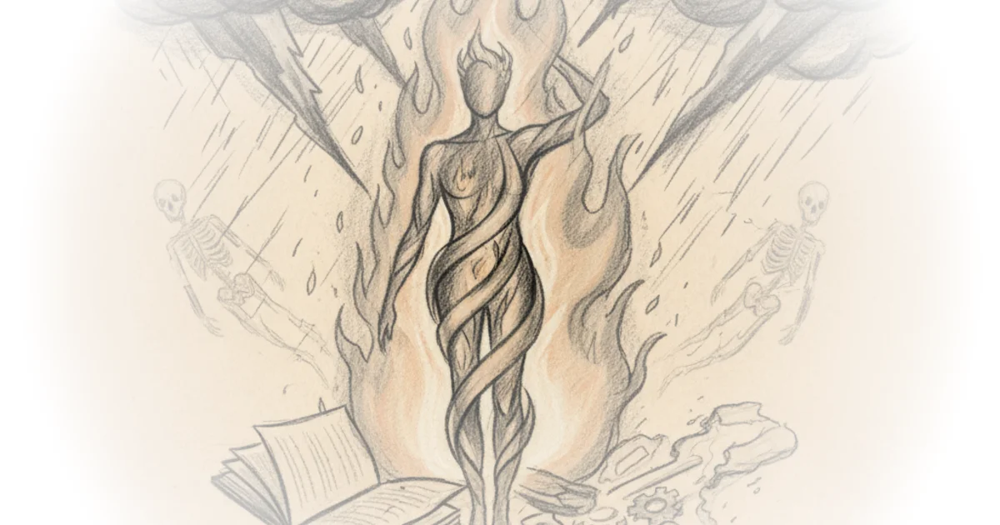
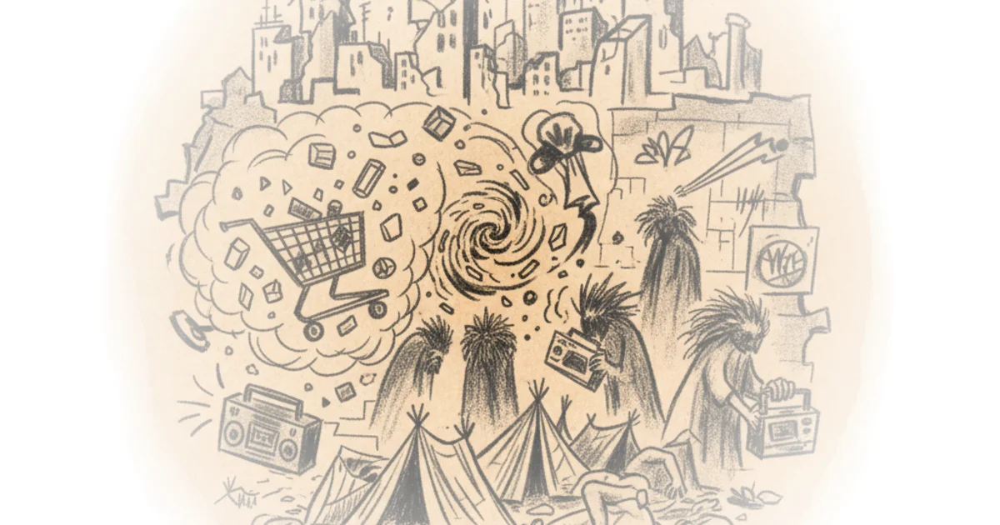
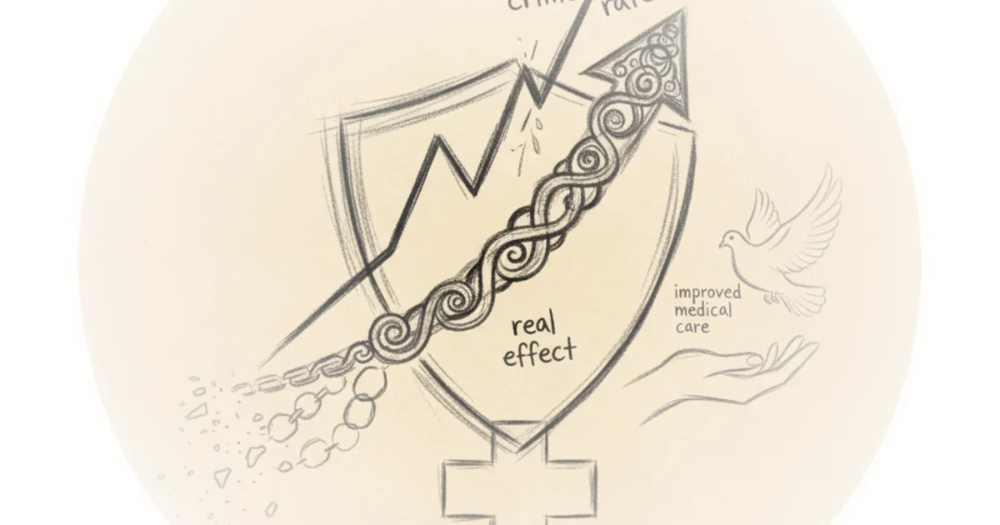
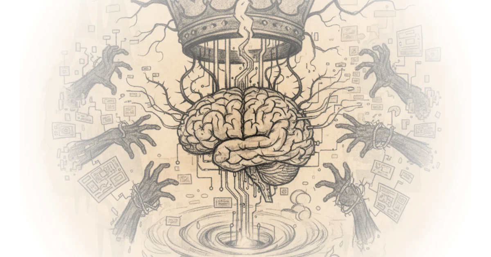

Towards an Alternative Canon of Millennial Pop Justin E. H. Smith · Hinternet ·Mar 5, 2026 · 29 min read · Culture
"School wars": Moral panic or self-fulfilling prophecy? Michael Macleod · London Centric ·Mar 3, 2026 · 12 min read · Culture
"All Lawful Use": Much More Than You Wanted To Know Scott Alexander · Astral Codex Ten ·Mar 1, 2026 · 18 min read · Culture
AI Just Entered Its Manhattan Project Era Alberto Romero · The Algorithmic Bridge ·Mar 1, 2026 · 11 min read · AI & Tech
Next-Token Predictor Is An AI's Job, Not Its Species Scott Alexander · Astral Codex Ten ·Feb 25, 2026 · 11 min read · AI & Tech
Is There a God? Stephen Hawking Gives the Definitive Answer to the Eternal Question Maria Popova · The Marginalian ·Feb 25, 2026 · 16 min read · Culture
The Third Self: Mary Oliver on Creativity and Time Maria Popova · The Marginalian ·Feb 25, 2026 · 10 min read · Culture
The Pentagon Threatens Anthropic Scott Alexander · Astral Codex Ten ·Feb 25, 2026 · 11 min read · AI & Tech
The Three Best Pieces of Writing About AI in 2026 That You Must Read Right Now Alberto Romero · The Algorithmic Bridge ·Feb 24, 2026 · 11 min read · AI & Tech
Tim Ferriss on How He Survived Suicidal Depression and His Tools for Warding Off the Darkness Maria Popova · The Marginalian ·Feb 23, 2026 · 11 min read · Culture 
The Seamstress Who Solved the Ancient Mystery of the Argonaut, Pioneered the Aquarium, and Laid the Groundwork for the Study of Octopus Intelligence Maria Popova · The Marginalian ·Feb 23, 2026 · 10 min read · Culture
Emily Dickinson’s Electric Love Letters to Susan Gilbert Maria Popova · The Marginalian ·Feb 22, 2026 · 16 min read · Culture
Seneca on Grief and the Key to Resilience in the Face of Loss: An Extraordinary Letter to His Mother Maria Popova · The Marginalian ·Feb 21, 2026 · 13 min read · Culture
How Do You Know That You Love Somebody? Philosopher Martha Nussbaum’s Incompleteness Theorem of the Heart’s Truth, from Plato to Proust Maria Popova · The Marginalian ·Feb 20, 2026 · 12 min read · Culture
Crime As Proxy For Disorder Scott Alexander · Astral Codex Ten ·Feb 19, 2026 · 12 min read · Culture 
121: 9 things your doctor didn’t tell you about gestational diabetes Various · Two Truths ·Feb 18, 2026 · 11 min read · Culture
Record Low Crime Rates Are Real, Not Just Reporting Bias Or Improved Medical Care Scott Alexander · Astral Codex Ten ·Feb 18, 2026 · 11 min read · Culture 
Love After Life: Nobel-Winning Physicist Richard Feynman’s Extraordinary Letter to His Departed Wife Maria Popova · The Marginalian ·Feb 18, 2026 · 14 min read · Culture
American Principles in the Age of MAGA Nihilism Sarah Longwell, Tim Miller, Bill Kristol · The Bulwark ·Feb 17, 2026 · 11 min read · Political Strategy
Episode #244 ... After Virtue - Alasdair MacIntyre (why moral debates feel so unsatisfying) Stephen West · ·Feb 16, 2026 · 37 min read
Politics vastly increases AI moral hazards Jimmy Alfonso Licon · ·Feb 16, 2026 · 22 min read · AI & Tech 